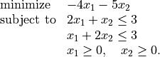
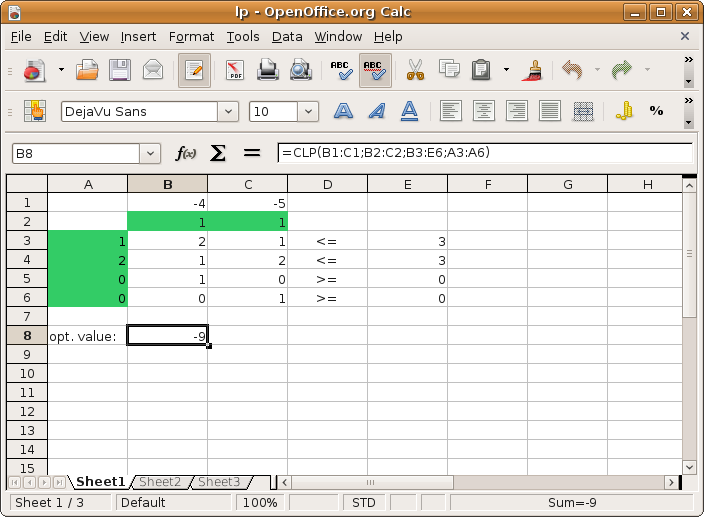

OpenOffice plugin¶
The OpenOfficece.org plugin provides a spreadsheet interface to the basic optimization solvers in CVXOPT.
Plugin, documentation, and examples:
cvxopt-OOo-plugint-1.1.zipUser’s guide:
userguide.pdf
As a simple example, the following linear programming problem,

can be solved using a spreadsheet as shown in the figure below,
